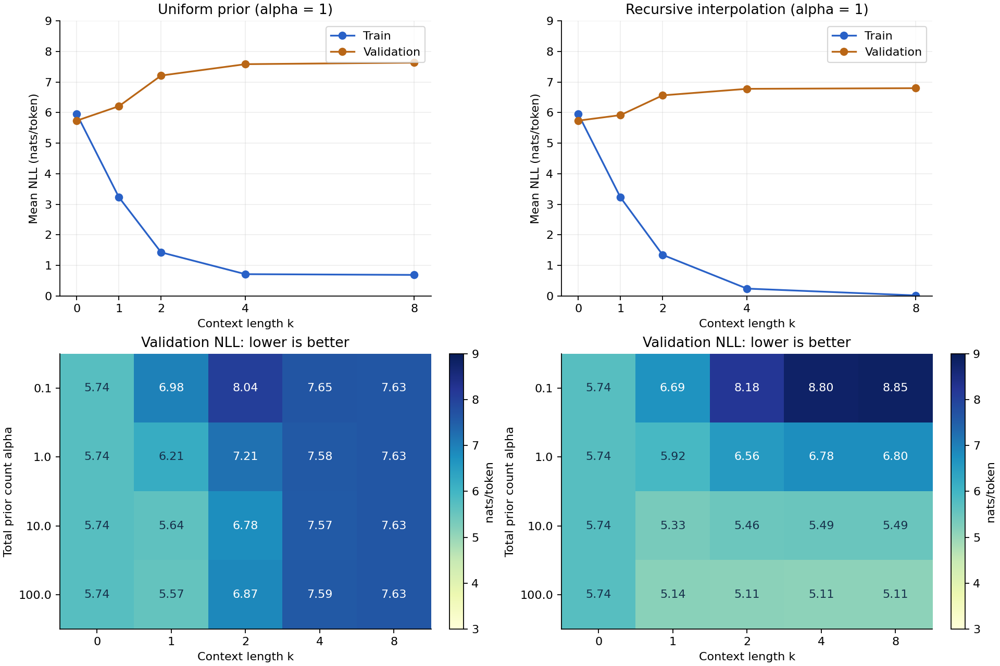
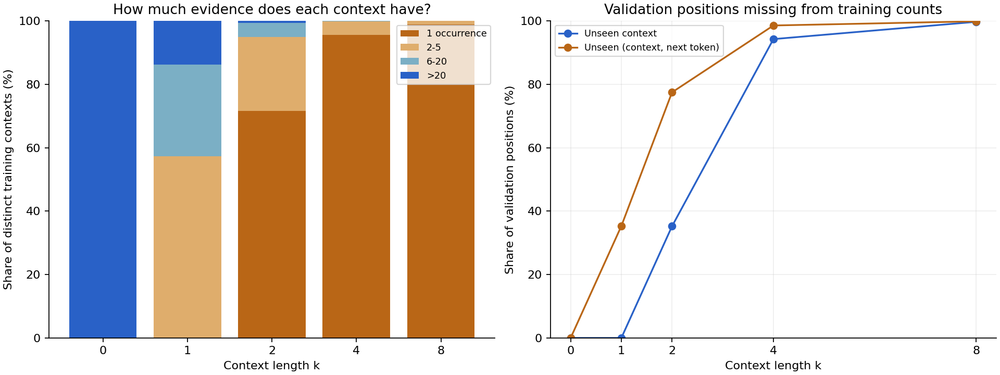
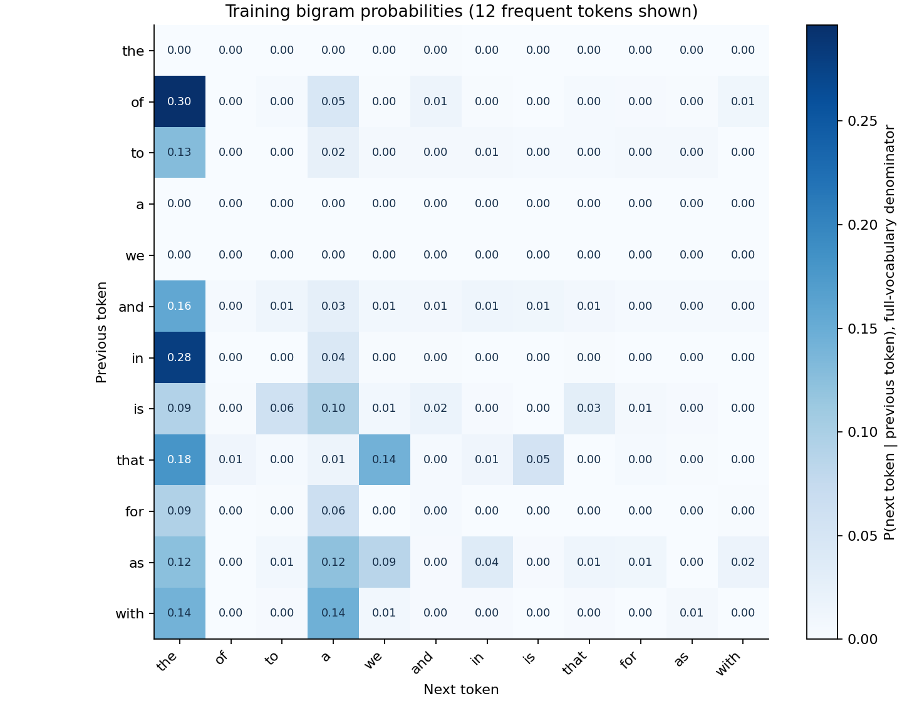

上下文越长，预测就越好吗？
D2L 讲义 · 36 篇训练文档 · 2077 个 token · CPU 计数模型
训练拟合与验证表现
上图固定 α = 1；下图比较不同平滑强度。NLL 越低越好。

更具体的上下文，有多少样本支持？

验证集选择的模型
递归插值 · k = 4 · α = 100
验证 NLL
5.106
5.106
测试 NLL
5.036
5.036
计算性能主题 NLL
5.158
5.158
使用同一词表与评分规则；测试集和计算性能主题文档不参与模型选择。
词语之间的转移统计

图中展示词表的一个子集，概率分母包含全部候选词。
实验 Notebook · 复现说明 · 完整结果 · 语料清单